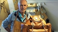

Jan Sandlund
Psykolog 1975, Bölebyns Garveri från 1984 – 2019, produktutvecklare.
| Född: | 1946 Roknäs, Piteå lfs, Piteå sn. [1] |
|---|
| Levde: | 1971 Bölebyn, Piteå lfs, Piteå kn. [2] |
|---|
| Vigsel: | 1972-08-12. |
|---|
| Levde: | 1975 Rosvik, Norrfjärdens fs, Piteå kn. [3] |
|---|
| Levde: | 2006 Roddarevägen 11, Piteå. [4] |
|---|
| Barn: |
|---|
| David Sandlund (1980 - ) |
| Anders Sandlund (1981 - ) |
Noteringar
En hundratjugoårig epok går mot sitt slut
I början av 1900-talet fanns omkring tio garverier i trakterna kring Piteälven. Nu stänger snart det sista.
– Sorgearbetet är nog snart avklarat, säger Jan Sandlund drygt 70 och med livslång erfarenhet av garvning, kanske ett av världens äldsta hantverk.
Uppe i sadelmakeriet i det gamla garveriet med utsikt över Piteälven finns fortfarande en del jobb att göra. De så kallade ministerportföljerna som varit ett av Böle garveris flaggskepp köps med service och underhåll. Den som har fått en rundsmörjning denna gång, tillhör en före detta vd för ett större företag i södra Sverige. Göran Persson, numera bankordförande i Swedbank, äger en annan av portföljerna.
– Han har nummer 73, säger Jan Sandlund som nästan minns varenda en.
På arbetsborden ligger dessutom en hög med dustbags, skyddande bomullspåsar med företagets logotyp. En amerikan har köpt upp hela lagret av ministerportföljer i barkgarvat läder som nu ska prepareras och skickas iväg.
– Det är det vi gör nu, avrustar och säljer ut, reparerar om det behövs, säger Jan Sandlund som till för inte så länge sedan hade en sadelmakare anställd, numera pensionerad.
Jans farfar, startade eget garveri i Roknäs några kilometer bort vid utloppet av Lillpiteälven i slutet av 1800-talet. En av hans söner tog över och Jans far Assar började sin verksamhet i Böle i slutet på 40-talet i det stora timrade garveriet alldeles vid bron över Piteälven.
Här har sedan dess garvats skinn både från traktens nötboskap och renar. Tillverkats seldon, väskor och kanske framförallt näbbskor och axelväskor som var populära under 70-talet och en bit in på 90-talet. För att överleva som företag när intresset avtog började Jan Sandlund tillverka mer exklusiva produkter. Golfbagar, portföljer, ryggsäckar och gevärsfodral. Något som bidrog till att de startade en butik i centrala Stockholm under början av 2000-talet, numera nedlagd. Företaget har dessutom beteckningen kunglig hovleverantör, med produktion av gåvoramar i läder.
Ett sätt att marknadsföra sig och sälja hantverket har alltid varit att finnas med på Jokkmokks marknad. När företaget slutade 2011 hade familjen Sandlund visat upp och sålt sina produkter i mer än 80 år.
Men det kunde ha tagit en helt annan vändning än ett liv med läder som huvudingrediens. Jan utbildade sig till psykolog på 70-talet och arbetade under många år i den professionen. Efter några års biståndsarbete i ett SIDA-finansierat projekt i Bangladesh tillsammans med familjen väcktes tanken på att starta eget.
– Det var då jag bestämde mig att för bli egenföretagare. Att jag är en ganska kreativ person med känsla för marknadsföring bidrog antagligen, berättar Jan
Nere i garveriet finns de bassängliknande karen kvar som innehåller vatten från älven och bark från skogen. Hur länge skinnen fick ligga för att mjukna och bli genomgarvade berodde på skinnets tjocklek. Jan rör om i ett av karen och fiskar upp ett skinn av de få skinn som nu bereds och som fått den mörkare färg ett färdiggarvat skinn ska ha.
– Jag minns när jag var liten och föll i ett av karen. Jag var kanske fyra-fem och hade fått en brun teddyoverall från en släkting i Amerika, berättar Jan som snabbt blev uppdragen.
– Men visst vore det kul om garveriet kunde gå vidare till en 5:e generation, förklarar Jan.
Hantverket kommer dock inte att försvinna helt utan fortsätter ändå, om än på andra sidan jorden som så mycket gammalt hantverk i Sverige idag. I Bangladesh driver sonen Anders en verksamhet tillsammans med den kompis han fick som liten på 70-talet under föräldrarnas biståndsperiod. De driver idag ett garveri tillsammans med tillverkning av väskor bland annat.
– Där bidrar jag med mitt kunnande. Det kan handla om att reparera eller skaffa reservdelar till maskiner, säger Jan som snart reser ner till Bangladesh igen.
kuriren.nu/nyheter/en-hundratjugoarig-epok-gar-mot-sitt-slut-nm5241159.aspx
Stina Brolin Bergman
7 NOVEMBER 2019 10:26
___________________________________
Publicerat måndag 27 november 2017 kl 14.37
Böle garveri i Piteå kommun satsar nu i Bangladesh, där ett nytt garveri ska byggas.
Familjen Sandlund har drivit sitt välrenommerade garveri i Böle i fyra generationer.
Men verksamheten stannar inte där och nu smids planer på en storsatsning i Bangladesh, där de redan har ett samarbete.
Fröet till samarbetet såddes redan på 1970-talet, berättar Jan Sandlund.
– Vi jobbade som volontärer i en by i Bangladesh och lärde känna en familj där.
Den vänskapen har nu lett fram till ett gemensamt väskmärke och produktionen ska nu expandera.
– Vi planerar att bygga ett nytt garveri där 2019, som kommer behöva mellan 6 000 och 10 000 nya hudar per år, säger Sandlund och berättar i ljudklippet om konceptet där kvinnor ska erbjudas mikrolån för att köpa en ko.
– Tanken är att det ska skapas många tusen nya jobb, men vi behöver investerare och det kommer gå loss på ungefär 15 miljoner kronor.
Ann-Christine Wallner-Hoppe, P4 Norrbotten
a-c.wallner@sverigesradio.se
___________________________________
Garveri satsar på internationell marknad
Publicerat onsdag 15 augusti 2007 kl 07.07
Garveriet i Bölebyn ska satsa på den internationella marknaden för att nå fler kunder. De har redan fått bra respons från ett flertal länder och experter anser att deras verksamhet är unik.
I flera generationer har familjen Sandlund skött garveriet i Bölebyn. Sammanlagt har verksamheten funnits i 107 år. Med hjälp av Anders Sandlund, fjärde generationens garvare i familjen, ska garveriet satsa på den internationella marknaden.
De har stängt gårdsbutiken och ska istället ha ett visningsrum för lyxportföljer och ta upp beställningar via Internet. De tror på en bra lönsamhet och har redan märkt av goda reaktioner från ett flertal länder.
Ida Gustafsson, SR Norrbotten
ida.gustafsson@sr.se
Anna Fjellström, SR Norrbotten
anna.fjellstrom@sr.se
______________________________________
Bōle is a true story. Founded in 1899, we are the last standing spruce bark tannery in the world. Under the same roof, we craft our unique cattle leather into bags and other leather goods. Our products are made to last and to age with style. We genuinely believe that we make the world’s best briefcases. Our beautiful rucksacks are created from organically tanned reindeer skin. Recently, we introduced the Classic collection as a tribute to traditional sadlery. As a 4th generation family business, and a purveyor to the Swedish royal court, we take the sustainable view on everything we do. Böle village is located along the Pite river just south of the Arctic circle in Sweden.
Personhistoria
| Årtal | Ålder | Händelse |
|---|
| 1946 |
|
Födelse 1946 Roknäs, Piteå lfs, Piteå sn [1] |
| 1947 |
|
Makan Inger Holmberg föds 1947 Helgums fs (Y) [1] |
| 1949 |
|
Brodern Lars Anders Sandlund föds 1949 Roknäs, Piteå lfs, Piteå sn [2] |
| 1954 |
|
Systern Agneta Sandlund föds 1954 Bölebyn, Piteå lfs, Piteå sn [2] |
| 1971 |
|
Levde 1971 Bölebyn, Piteå lfs, Piteå kn [2] |
| 1972 |
|
Vigsel Inger Holmberg 1972-08-12 |
| 1975 |
|
Levde Inger Holmberg 1975 Rosvik, Norrfjärdens fs, Piteå kn [3] |
| 1980 |
|
Sonen David Sandlund föds 1980 Rosvik, Norrfjärden fs, Norrfjärdens sn [5] |
| 1981 |
|
Sonen Anders Sandlund föds 1981 Rosvik, Norrfjädens fs, Piteå kn [5] |
| 1993 |
|
Brodern Lars Anders Sandlund dör 1993 Bölebyn, Piteå lfs, Piteå kn [6] |
| 1997 |
|
Fadern Erik Assar Sandlund dör 1997-10-06 Nya Älvv 645, Piteå, Piteå lfs, Piteå kn [7] |
| 2003 |
|
Modern Siri Alexia Viklund dör 2003-05-25 Nya Älvvägen 645, Piteå, Piteå lfs, Piteå kn [8] |
| 2006 |
|
Levde Inger Holmberg 2006 Roddarevägen 11, Piteå [4] |
Dokument
Källor
| [1] | Mtl Sveriges befolkning 1950 |
| |
| | |
| [2] | Mtl Norrbottens län 1971 |
| |
| | |
| [3] | Mtl Sveriges befolkning 1975 |
| |
| | |
| [4] | https://www.ratsit.se/sok/avancerat/person |
| |
| | |
| [5] | Mtl Sveriges befolkning 1985 |
| |
| | |
| [6] | RTB 93, SPAR 92f, SPAR 95, SDB7_05563087 |
| |
| | |
| [7] | RTB 97 / SPAR 92f |
| |
| | |
| [8] | man91 / RFV 06 |
| |
|
|  |
| 2019. Jan Sandlund, Bölebyns Garveri |
| |
|
2014. Bölebyns Garveri
Sonen Anders Sandlund 4:e gen. och fadern Jan Sandlund.
|
| |
|
| 2017. Jan Sandlund, Bölebyns Garveri |
|
{kind=link}
{kind=link}
{kind=link}